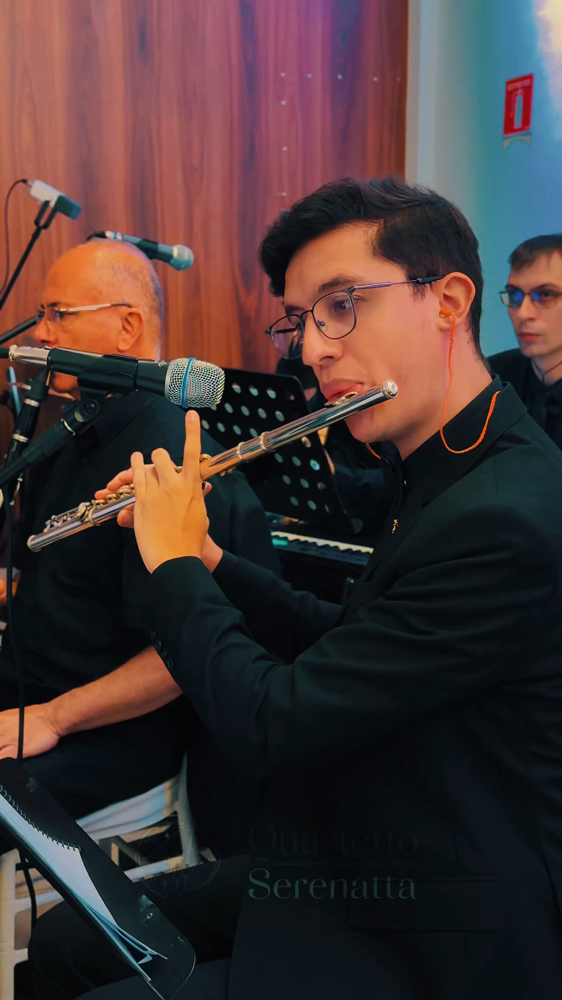

Cleber Viana e Cezar Basso somam mais de 20 anos de experiência profissional em cerimônias, eventos e formações eruditas.

Quem somos
Mais de duas décadas de estrada
Arranjos exclusivos
Do clássico ao contemporâneo
Tradição erudita, sensibilidade moderna e música feita para contar histórias.
O Quartetto Serenatta nasceu da paixão por criar atmosferas únicas em momentos decisivos. Nossa missão é elevar a experiência de cada convidado e transformar a trilha do evento em parte viva da emoção.
João Victor assina arranjos que transformam canções populares e músicas afetivas em versões instrumentais únicas.
Formações instrumentais e com vozes se adaptam ao estilo, rito, público e atmosfera de cada ocasião.
"Cada nota é lapidada com carinho para emocionar."